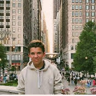

Presentation
Bonjour, je m'appelle Tristan, j'ai 16 ans et je suis en classe de première à Ferney-Voltaire. Peut-être vous me connaissaient déjà comme la personne qui calme Eliot a l'agora. Je suis Français et américain, mais j'aime pas le fromage donc je ne suis pas sur du côté français.
Scolarité
Comme enseignements de spécialité, j'ai choisi Maths, Physique-chimie et NSI. Même si toutes ces matières m'intéressent, je vais peut-être me diriger du côté business, pour l'université. Cela dit, je n'ai pas de métier particulier que j'aimerais exercer plus tard. Tant qu'on me force pas à étudier du français, je ne me plains pas.
Je suis aussi intéressé par l'anglais, mais je n'envisage pas une carrière en rapport avec cette matière, appart pour faire du journalisme. Il est quand même important que je conserve mon niveau d'anglais, puisque je pense aller au Royaume-Uni pour les études supérieures.
En dehors des cours
À côté du lycée, j'aime faire du sport. J'ai fais 6 ans de football, mais récemment je me suis tourné vers la boxe. Ça fait maintenant 1 an et demi que je fais de la boxe et de la MMA à Thoiry. J'écoute aussi pas mal de musique.
Je passe beaucoup de temps avec mes amis, mais puisque Genève est si cher, il faut limite vendre sa maison pour un café.